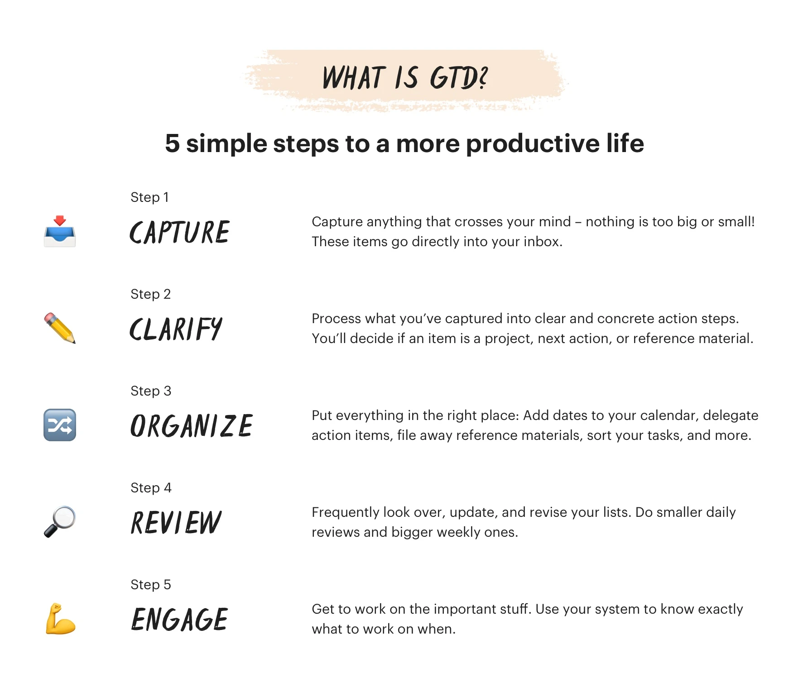

Getting Things Done (GTD)
Table of Contents
The more information bouncing around inside your head, the harder it is to decide what needs attention.

1. Overview
- Capture Everything: Capture anything that crosses your mind. Nothing is too big or small. These items go directly into your inboxes.
- Clarify: Process what you've captured into clear and concrete action steps. Decide if an item is a project, next action, or reference.
- Organize: Put everything into the right place. Add dates to your calendar, delegate projects to other people, file away reference material, and sort your tasks.
- Review: Frequently look over, update, and revise your lists.
- Engage: Get to work on the important stuff.
2. Capture
3. Clarify
Make your tasks as specific and actionable as possible.
- If the item will take less than 2 minutes, complete it right away.
- If it can be delegated, assign the task to someone else.
- If it's a non-actionable reference item (eg, a file, document, article, contact information etc.) that you'll need to come back later, file it away in a seperate reference project or attach it to the comments of the relevant project or task.
- If the task needs to be done on a special date and/or time, give the task a due date.
- If the task is no longer needed or actionable, delete it.
- If a task requires more than one step, create a project to house all of the items associated with it and identify the one next action you can take to move the project forward.
4. Organize
4.1. One-off tasks
These are tasks that take longer than 2 minutes but only requires one step.
- Create a new project called One-Off Tasks.
- Move one step tasks in inbox to it.
4.2. Projects
Any items that requires more than two steps to complete.
4.3. Next actions
4.4. Reference materials
4.5. Waiting for
4.6. Someday/maybe
4.7. Delegate
4.8. Contexts
- computer/internet
- home
- office
- errands
- calls
- anywhere
5. Engage
The time spent clarifying and organizing your tasks means that when it's time to engage with work, you have fewer choices to make and fewer reference materials to find.
5.1. Today and Upcoming views
5.2. View Next Actions and Contexts via tag
5.3. Create more custom task views with filters
- Due date
- Tag
- Priority
- Project
- Date a task was created
- Keywords
- Or a combination of some or all of the above
6. Review
The review helps you adapt to changes, refocus your attention, identify next actions, and reflect on your workflow.